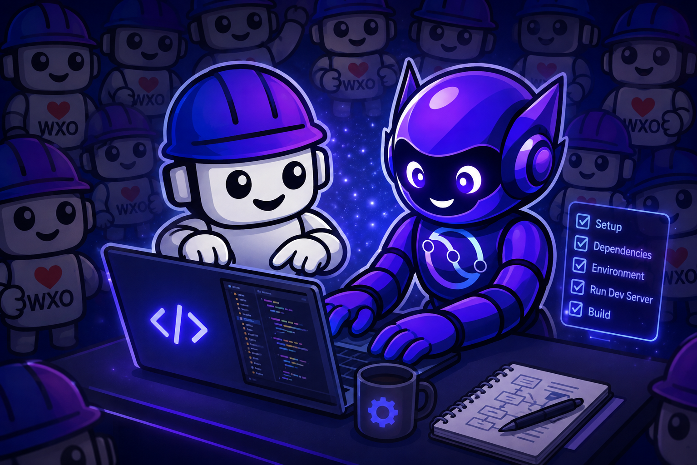
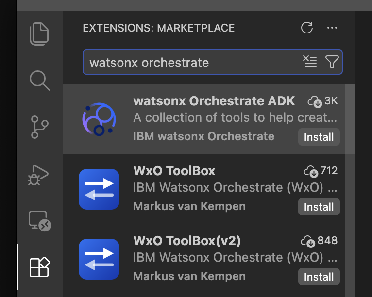
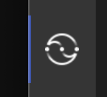

Setup & Environment¶

Duration: ~30 minutes · Difficulty: ⭐
Everything in this part is preparation. By the end you will have accounts, a configured
Bob IDE workspace, and a working orchestrate CLI — the starting line for the lab itself.
Step 1: Create your watsonx Orchestrate instance¶
Create a free watsonx Orchestrate trial instance. This takes about 5–10 minutes.
1.1 Start the trial¶
Go to ibm.com/products/watsonx-orchestrate and click Start your free trial.
1.2 Sign up with your email address¶
Enter your email address to create an IBMid.
Warning
Do not use Continue with Google. Sign up with your email directly — social login can cause access problems later in the lab.
1.3 Verify your email¶
- IBM sends a verification code to your inbox, usually within a minute.
- Paste the code into the sign-up page and click Verify.
No code?
Check your spam/junk folder. Wait about 60 seconds before clicking Resend — requesting several codes in a row invalidates the earlier ones. Always use the most recent code.
1.4 Complete your account details¶
Enter your name, country and a password, then accept the terms.
1.5 Configure your instance¶
| Setting | Value |
|---|---|
| Name | openslava-lab-<yourname> |
| Region | Frankfurt (eu-de) |
Use Frankfurt
Everyone must use Frankfurt (eu-de) so the Confluent connection steps later in the lab match.
1.6 Finish setup¶
Click Complete. Provisioning takes a minute or two, then you're redirected to your watsonx Orchestrate home page.
Checkpoint
You should see the watsonx Orchestrate chat and the Build menu. If you don't, ask an instructor before continuing.
Troubleshooting¶
| Problem | Fix |
|---|---|
| Verification code rejected | Request a new code and use only the most recent email. |
| "Account already exists" | Sign in with that IBMid. Use Forgot password if needed. |
| Stuck on provisioning | Wait 2–3 minutes, then refresh the page. |
Step 2: Start your IBM Bob trial¶
IBM Bob is IBM's AI development partner. The free trial runs for 30 days and includes 50 Bobcoins, with no payment details needed. Setup takes about 5 minutes.
Go to bob.ibm.com/trial and click Start your free trial. Sign in with the same IBMid you created in Step 1.
Tip
If you're asked to verify your email again, follow the same steps as in 1.3.
Step 3: Install Bob IDE¶
Go to bob.ibm.com/download and choose Bob IDE for your operating system:
| OS | Installer |
|---|---|
| macOS | mac-ARM for Apple silicon (M1 or newer), mac-Intel for Intel Macs |
| Windows | x64 (User) .exe |
| Linux | .deb (Debian/Ubuntu) or .rpm (Red Hat/Fedora) |
Install it, open it, and sign in with your IBMid.
Warning
You must be logged in to use Bob's AI capabilities throughout the lab. If you hit login issues, contact your instructor now rather than later.
Detailed install guide: bob.ibm.com/docs/ide/getting-started/install
Step 4: Verify your Python installation¶
Open a terminal and run:
You need Python 3.11, 3.12, or 3.13. If Python is not installed:
Step 5: Verify your uv installation¶
If uv is not installed:
After installing, open a new terminal and run uv --version again to confirm.
Step 6: Download and extract the workshop workspace¶
The workspace zip is your project folder — extracting it creates
bobchestrate-confluent/ with the .bob/ configuration and all the pre-built lab code
already in place. You do not need to clone any repository.
- Download bobchestrate-confluent.zip
- Extract it to your Desktop or another convenient location:
After extracting you have:
bobchestrate-confluent/
├── .bob/ # Bob IDE configuration (auto-loaded)
│ ├── custom_modes.yaml # WXO Agent Architect mode
│ ├── mcp.json # ADK + docs MCP servers
│ ├── rules/
│ │ └── wxo-dev-rule-enhanced.md # wxO best-practice rule
│ └── skills/
│ └── wxo-langgraph/ # LangGraph-for-wxO reference skill
└── retail-inventory-optimization/ # Pre-built lab code and data
├── pyproject.toml
├── uv.lock
├── fashion-inventory-consumer/ # Python scripts
├── fashion-inventory-setup/ # Schemas, Flink SQL, test data
└── labs/part2-watsonx-orchestrate/
└── inventory-alert-demo-knowledge/ # Knowledge base documents
Note
The .bob folder is hidden in most file explorers because it starts with a dot.
That's expected — Bob IDE finds it automatically.
What the .bob bundle gives you¶
| Component | What it does |
|---|---|
| WXO Agent Architect mode | A Bob chat mode specialised for watsonx Orchestrate development — consults the live wxO docs before answering and uses the ADK MCP server to inspect your environment |
wxo-dev-rule-enhanced |
A workspace rule that loads watsonx Orchestrate best practices into every Bob response — naming conventions, tool patterns, agent YAML structure, connection setup |
watsonx-orchestrate-adk MCP server |
Direct access to your wxO environment — list agents, tools and connections, import artifacts, and chat with agents without leaving the IDE |
watsonx-orchestrate-adk-docs MCP server |
Real-time access to the full watsonx Orchestrate ADK documentation, which Bob searches automatically to verify platform specifics |
wxo-langgraph skill |
Deep LangGraph-for-wxO knowledge: entry point contract, platform constraints, credential patterns, checkpointers and a troubleshooting reference |
These layers complement each other:
- Mode — sets Bob's persona and behaviour for a session. It's the "who Bob is" layer.
- Rule — sets always-on constraints that apply to every response regardless of mode or topic, so Bob never generates code that violates wxO conventions.
- Skill — provides deep, topic-specific knowledge that Bob loads on demand when the topic matches, without you having to remind it of the rules.
Step 7: Open the workspace in Bob IDE¶
- In Bob IDE, click File → Open Folder
- Navigate to the extracted
bobchestrate-confluentfolder and click Open - Click Yes, I trust the author when prompted
The workspace opens with the .bob/ configuration already active.
Step 8: Create a Python virtual environment¶
- Open the Command Palette (
Cmd+Shift+P/Ctrl+Shift+P) - Type "Python: Create Environment" and select it
- Choose Venv
- Select Python 3.11, 3.12, or 3.13
- Wait for the environment to be created
A .venv folder appears in your workspace. Bob IDE activates it automatically in all new
terminals — you'll see (.venv) in your prompt.
Step 9: Install the watsonx Orchestrate ADK extension¶
Already have the extension installed?
Reload the Bob IDE window first so the extension picks up your new virtual environment: Command Palette → "Developer: Reload Window". Then skip ahead to Step 10. Do not use the extension to initialise the workspace.
-
Open the Extensions view (
Cmd+Shift+X/Ctrl+Shift+X) — the icon in the Activity Bar: -
Search for "watsonx Orchestrate"
-
Click Install on the watsonx Orchestrate ADK extension (publisher: IBM watsonx Orchestrate):

-
Wait for the installation to complete, and reload Bob IDE if prompted
-
The extension icon appears in the Activity Bar:

Do not open the extension
You only need it installed. Using the extension to initialise the workspace
conflicts with the pre-built .bob configuration and breaks the setup.
The extension provides workspace management, ADK version management, agent and tool file creation, Developer Edition server control, and the Orchestrate AI Builder Assistant — none of which you need to open manually for this lab.
Step 10: Install the watsonx Orchestrate ADK¶
- Look at the status bar at the bottom of Bob IDE — you should see a red ❌ indicating the ADK is not installed in your new virtual environment
- Click the red ❌
- Select the option to install the ADK
- Wait for the installation to complete — the status bar shows a green ✅ with the version number
Step 11: Verify Bob's wxO configuration¶
The workspace already includes the MCP server and mode definitions. Now confirm Bob can actually use them.
11.1 Verify the MCP servers¶
- Open Bob's chat panel and select Agent or Ask mode
- Ask Bob:
What MCP servers are available? - If Bob asks for permission, select Approve for task
- You should see both listed:
watsonx-orchestrate-adk— tools for interacting with watsonx Orchestratewatsonx-orchestrate-adk-docs— watsonx Orchestrate documentation
11.2 Verify the WXO Agent Architect mode¶
- Click the mode selector in Bob's chat panel
- WXO Agent Architect should appear in the list
- Select it and ask:
What can you help me with in this mode? - Bob lists the main topics it covers
11.3 Verify the custom development rule¶
- Keep WXO Agent Architect selected
- Ask Bob:
What custom rules do you have access to? - You should see the topics from
wxo-dev-rule-enhanced.mdlisted
Step 12: Connect the ADK to your watsonx Orchestrate environment¶
12.1 Get your credentials¶
API key:
- In the wxO console, click your profile icon (top-right)
- Select Settings → API details
- Click Generate API key, then Copy immediately
- Store it securely — it is shown only once
Instance URL: copy the Service instance URL from the same API details page.
12.2 Add and activate the environment¶
Open a terminal in Bob IDE (Terminal → New Terminal) and run:
# Add your environment
orchestrate env add -n openslava-lab -u <your-instance-url>
# Activate it
orchestrate env activate openslava-lab -a <your-api-key>
You should see: [INFO] Environment 'openslava-lab' is now active
- Make sure WXO Agent Architect mode is selected in Bob's chat
-
Ask Bob:
-
Bob will ask permission to use the wxO documentation MCP server, write the script, and make it executable — grant access so it can finish the task
- Follow Bob's instructions to run the script
Authentication expires every two hours
When it expires, re-run orchestrate env activate with your API key. Keep the key
handy — you'll need it again during the lab.
12.3 Verify the connection¶
Any output without an error — including an empty list — means you're connected.
You're ready when¶
-
orchestrate agents listreturns without error - Bob responds and WXO Agent Architect appears in the mode selector
- Both MCP servers show as available
-
bobchestrate-confluent/is open in Bob IDE with.venvcreated - You have a Confluent Cloud account ready (free trial is fine)
Troubleshooting¶
orchestrate: command not found
The ADK isn't installed, or isn't on your PATH. Make sure your virtual environment is active, then reinstall:
Authentication failed or 401 Unauthorized
Your wxO session has expired — sessions last two hours. Re-activate:
Bob isn't responding, or MCP servers show red
- Check MCP server status via Command Palette → "MCP Servers"
- Confirm
.bob/mcp.jsonexists in the open workspace folder - Restart Bob IDE if it stays unresponsive
.bob folder not found / WXO Agent Architect mode missing
The .bob folder must sit at the root of the folder you opened in Bob IDE:
If it's missing, redo Step 6 and extract into a fresh location.
Quick reference¶
# Check ADK version
orchestrate --version
# Add wxO environment
orchestrate env add -n openslava-lab -u <instance-url>
# Activate wxO environment (re-run every 2 hours)
orchestrate env activate openslava-lab -a <api-key>
# List environments, agents, tools, connections
orchestrate env list
orchestrate agents list
orchestrate tools list
orchestrate connections list
# Help
orchestrate --help